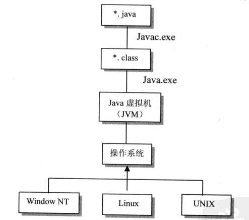
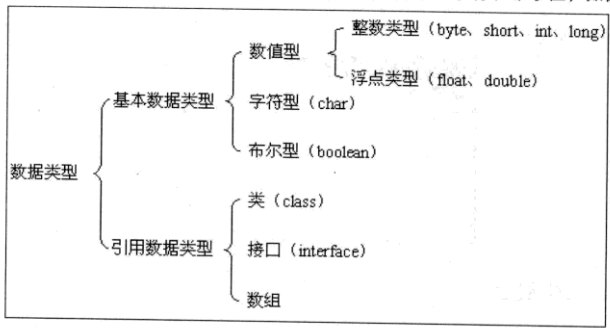
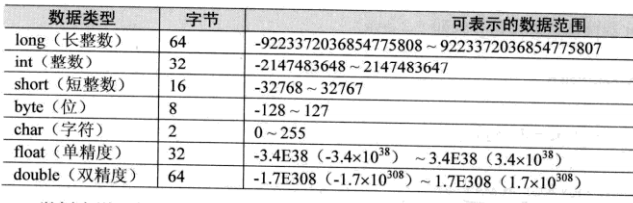

Java的解释
Java来自于Sun公司的一个叫Green的项目，Java是一门面向对象的编程语言
JVM
即在机器和编译程序之间加入了一层抽象的虚拟的机器。这台虚拟的机器在任何平台上都提供给编译程序一个共同的接口。
编译程序只需要面向虚拟机，生成虚拟机能够理解的代码，然后由解释器来将虚拟机代码转换为系统的机器码执行。
在java中，这种供虚拟机理解的代码叫做字节码（ByteCode），它不面向任何特定的处理器，只面向虚拟机。

程序运行的起始点---main() method
java程序是由一个或一个以上的类组合而成的，程序起始的主体也在被包含在类中。这个起始的地方称为main()。
main()方法为程序的主方法，在一个java程序中有且只能有一个main()方法
常量
常量就是固定不变的量，一旦被定义，它的值就不能再被改变。
声明常量的语法为：final 数据类型 常量名[=值]
常量名称通常使用大写字母，列入PI、YEAR等，但并不是硬性要求
变量是利用声明的方式，将内存中的某个块保留下来以供程序使用。
数据类型


char与byte的区别：
byte 是字节数据类型，是有符号型的，占1 个字节；大小范围为-128—127。
char 是字符数据类型，是无符号型的，占2字节(Unicode码 ）；大小范围是0—65535
1、char是无符号型的，可以表示一个整数，不能表示负数；而byte是有符号型的，可以表示-128—127的数
2、char可以表中文字符，byte不可以
3、char、byte、int对于英文字符，可以相互转化
强制类型转换
强制类型语法转换：（欲转换的数据类型）变量名称
数组
一维数组写法：数据类型 数组名[ ] = new 数据类型[个数]
int score[] = new int[11];声明一个元素个数为11的整型数组score
二维数组写法：数据类型 数据名[ ][ ] = new 数据类型[行的个数][列的个数]
对象
声明对象：类名 对象名 = new 类名();
Person p = new Person();